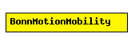

File: Mobility/BonnMotionMobility.ned
C++ definition: click here
Uses the native file format of BonnMotion (http://www.cs.uni-bonn.de/IV/BonnMotion/).
The file is a plain text file, where every line describes the motion of one host. A line consists of one or more (t, x, y) triplets of real numbers, like:
t1 x1 y1 t2 x2 y2 t3 x3 y3 t4 x4 y4 ...
The meaning is that the given node gets to (xk,yk) at tk. There's no separate notation for wait, so x and y coordinates will be repeated there.
Author: Andras Varga
The following diagram shows usage relationships between modules, networks and channels. Unresolved module (and channel) types are missing from the diagram. Click here to see the full picture.
| Name | Type | Description |
|---|---|---|
| debug | bool | debug switch |
| traceFile | string | the BonnMotion trace file |
| nodeId | numeric const | selects line in trace file; -1 gets substituted to parent module's index |
| updateInterval | numeric const | time interval to update the hosts position |
simple BonnMotionMobility parameters: debug : bool, // debug switch traceFile: string, // the BonnMotion trace file nodeId: numeric const, // selects line in trace file; -1 gets substituted to parent module's index updateInterval : numeric const; // time interval to update the hosts position endsimple